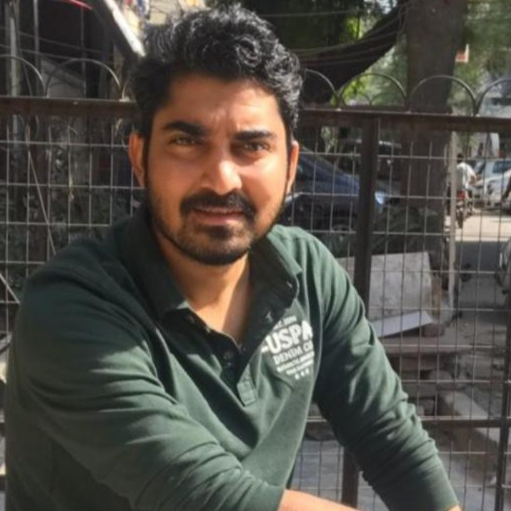
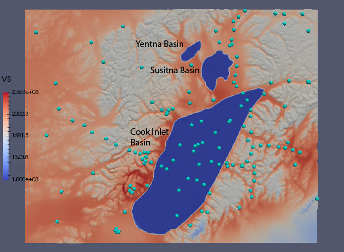
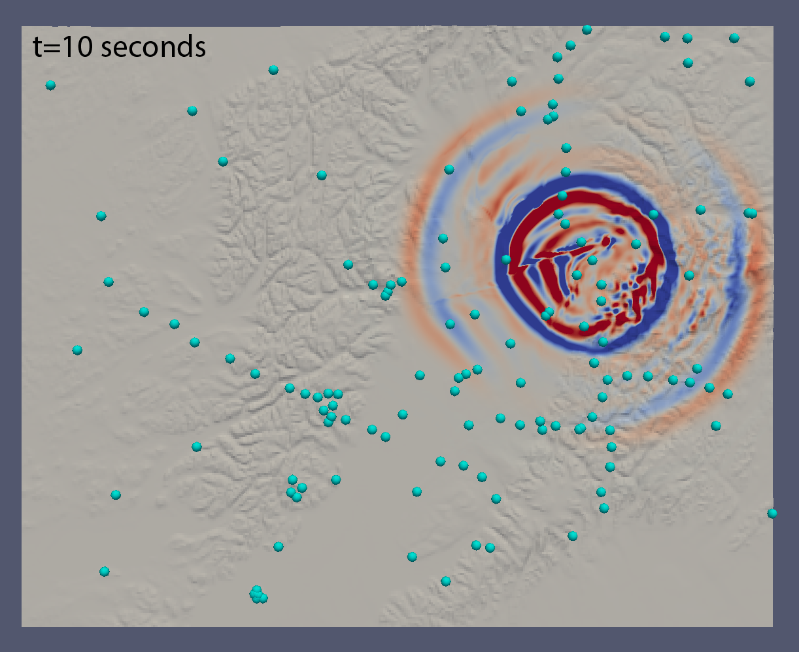
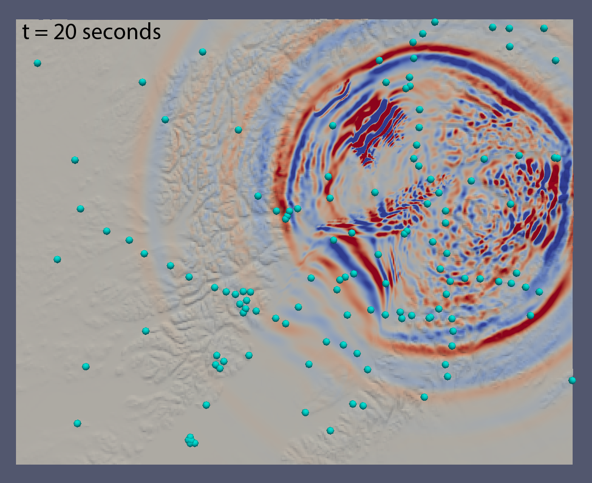
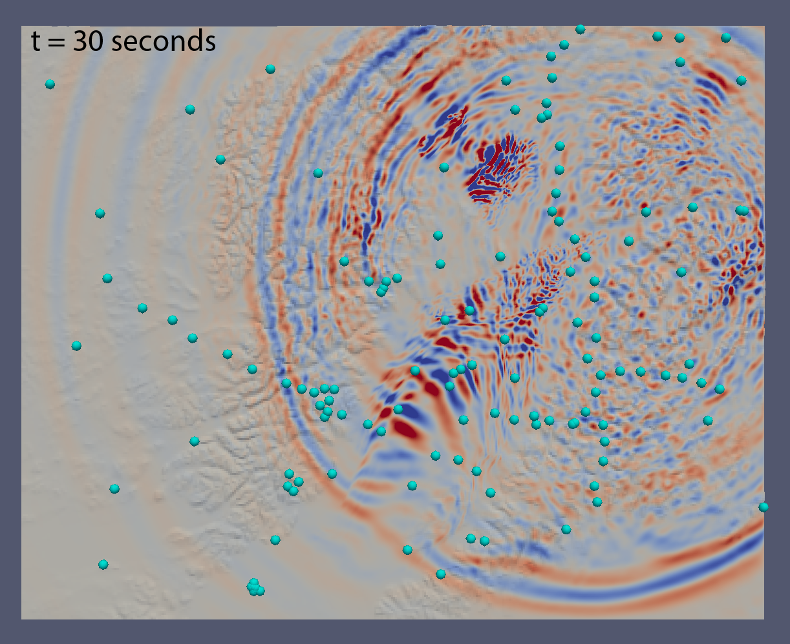
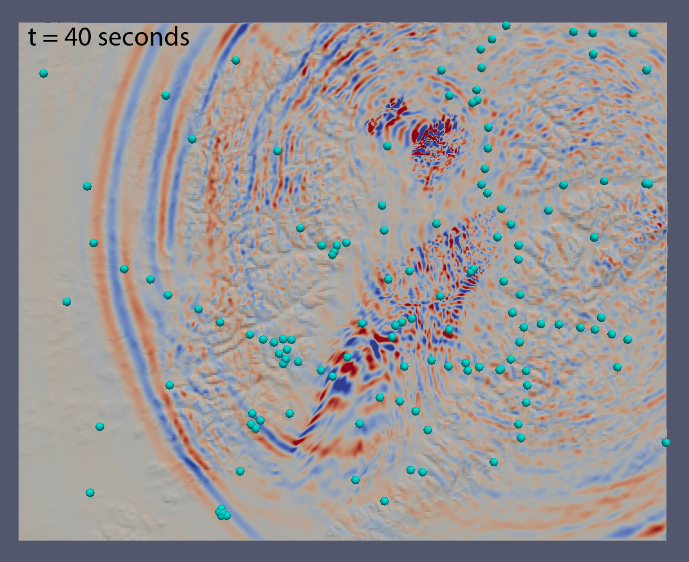
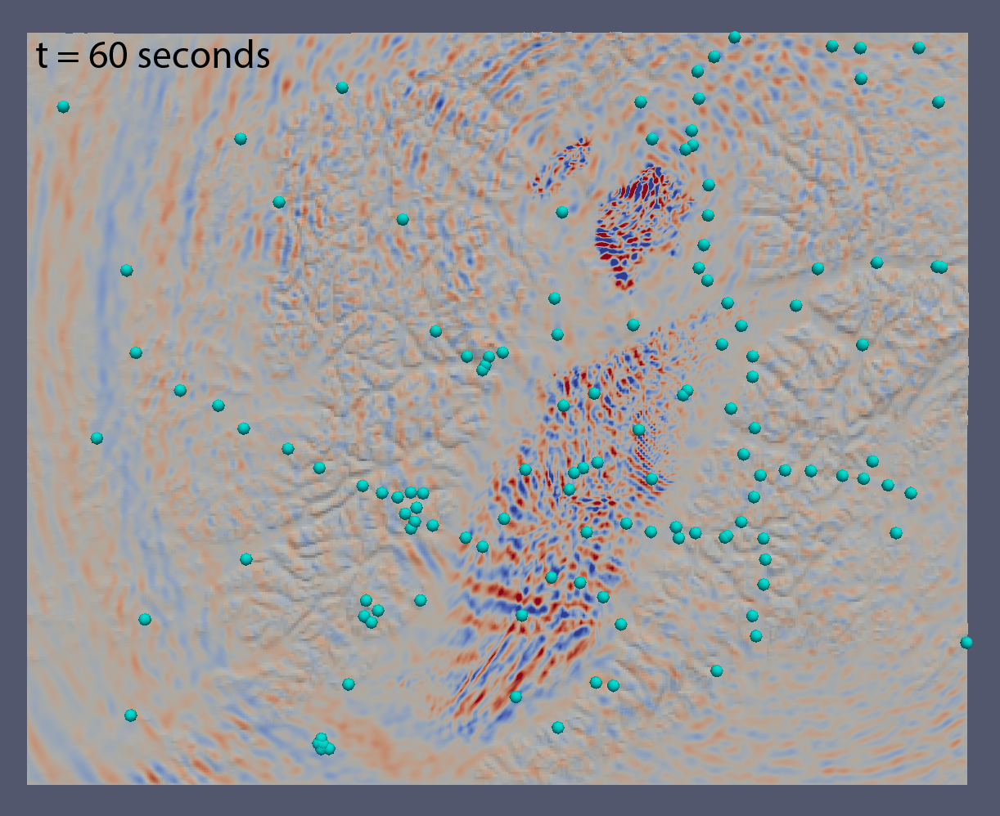

| Dr. Vipul
Silwal Associate Professor Department of Earth Sciences International Center of Excellence for Dams ICED (Joint Faculty) Indian Institute of Technology Roorkee (IITR) Uttarakhand, India Education Ph.D. in Geophysics, University of Alaska Fairbanks , 2012 - 2018 Integrated B.Sc. and M.Sc. in Exploration Geophysics, Indian Institute of Technology, Kharagpur, 2007 - 2012 |
 |
| Links Research CV (pdf) Github page Group members Field trips |
Research Interests:
|





